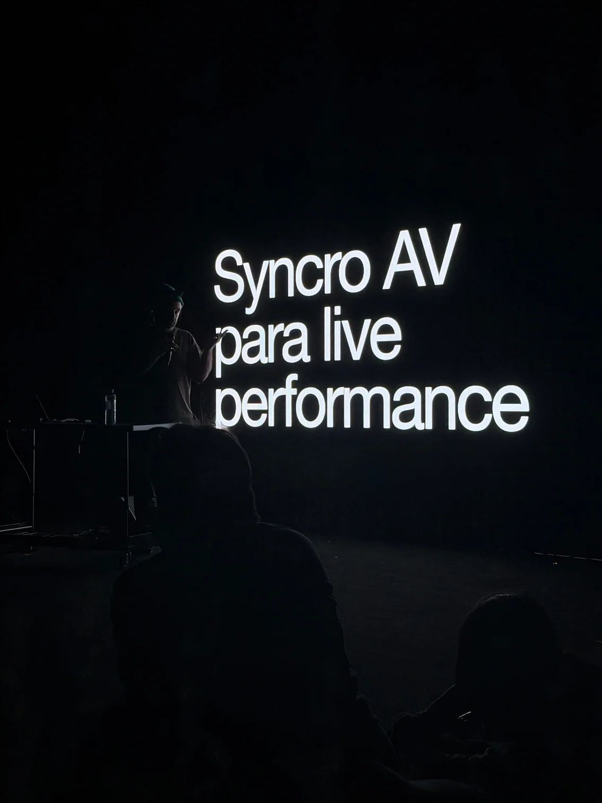

01 / The Masterclass
01 / El workshop
Syncro A/V
for live performance
From studio rig to live stage.
Del set a la escena.
Hands-on experimentation inside a real audiovisual stage setup. Explore the exact synchronization architectures used in large-scale touring shows.
Aprender y experimentar en un set real. Explorar las mismas técnicas de sincronización que utilizan los artistas en sus shows.
Designed for universities (NYU ITP, MIT, UCLA, SAIC, Parsons) and media art centers (CultureHub, Gray Area, Pioneer Works), this module unpacks real-time synchronization across generative video, DMX/laser lighting, and electronic sound—allowing participants to patch and test their own systems directly on the stage rig.
Un taller para trabajar implementaciones de sincronización aplicadas al control de video, iluminación y sonido en un ámbito profesional. Los dispositivos escénicos se analizan desde lo técnico y lo performativo; después, cada participante puede probar sus propias ideas sobre ese set.
Video
Real-time shaders, particle systems & 3D stage digital twins.
Visuales y control en tiempo real.
Light & DMX
Luz
Art-Net, DMX512 & laser synchronization with stage fixtures.
Iluminación y dispositivos escénicos.
Sound
Sonido
Low-latency FFT/onset analysis, OSC/MIDI state machines & synchresis.
Sincronización para la performance.

02 / Institutional Module
02 / Formato
Bring Syncro A/V
to your Institution / Festival
Dos días de trabajo.
Una muestra abierta.
Bring Syncro A/V to your Institution / Festival.
Experimentar. Crear en vivo.
- Format
- Encuentros
- 3-Hour Hands-On Masterclass / Lecture + 45-Min Live A/V Performance (adaptable 2 to 6 hours)
- 2 encuentros de 3 horas, con un break (o módulo intensivo de 3 hs + show)
- Attendee Profile
- Perfil y Nivel
- Graduate & undergraduate students in Creative Tech, Interactive Media, Music Tech & Visual Arts (up to 40 hands-on)
- Inicial / intermedio — hasta 40 participantes en modalidad práctica
- US Visa & Travel
- Logística EE.UU.
- US Visa Active · Carry-on fly-in rig · Frequently in NYC, Chicago & Miami
- Visa EE.UU. activa · Setup fly-in de cabina · Viajes regulares a NYC, Chicago y Miami
- Institutional Fee
- Arancel Institucional
- $1,200 – $2,500 USD (turnkey Masterclass + Live A/V Performance combo) · Book a 2027 Date →
- Consultar fechas 2027 →
Participants are encouraged to bring their own laptops, controllers, or synthesizers to connect and test live on the stage audiovisual + DMX system.
Podés traer los equipos con los que ya trabajás: computadora, consola u otros dispositivos, para experimentar con tus ideas dentro del set.
03 / Manuel Palenque
Senior Creative Technologist.
Live A/V Artist.
Founder of DataRaíz.
Artista visual.
Tecnólogo creativo.
Fundador de DataRaiz.
15+ years building real-time stage systems.
Arte y tecnología,
en práctica.
Senior Creative Technologist (Immersive) at Superside, former Technical Video Director for Fuerza Bruta (Tokyo/Buenos Aires), and founder of DataRaíz. Over 15 years designing immersive audiovisual performances and interactive installations (Buenos Aires Planetarium, Tecnópolis, Adidas NMD, Bright Moments Venice), with lectures and performances in Tokyo, Hong Kong, Berlin, and the United States.
Más de 15 años de experiencia en experiencias audiovisuales inmersivas e instalaciones interactivas. Su trabajo conecta el arte con tecnologías avanzadas, con proyectos y actividades educativas en Tokio, Hong Kong, Berlín y Estados Unidos.
04 / Live A/V
45–60 min
Real-time A/V + DMX
vvvv / Shaders
COLAPSO
Between order and chaos.
Between algorithmic control and entropy.
Entre el orden y el caos.
Entre el control y la desintegración.
A live audiovisual performance exploring collapse and entropy. Custom particle systems and shaders developed in vvvv generate real-time visuals tightly coupled with live electronic sound and DMX lighting. Rehearsed and pre-visualized inside a 3D Digital Twin of the venue stage prior to load-in.
Una performance audiovisual en vivo que explora el colapso y la entropía. Sistemas de partículas desarrollados en vvvv generan visuales en tiempo real, sincronizados con la música en vivo. La puesta se ensaya y previsualiza en un digital twin 3D del escenario antes del montaje real.

05 / Production
05 / Producción
Technical Rider
& Requirements
Requerimientos
y condiciones
The space is part of the instrument.
El espacio también
es parte del set.
Masterclass / Classroom & Studio Equipment
Workshop / Equipamiento y espacio
- Auditorium, studio, or black box with controlled darkness.
- LED wall or high-contrast projector (HDMI/SDI) and full-range stereo PA with subwoofers.
- Table for the artist's carry-on fly-in rig, Wi-Fi, and optional DMX stage fixtures.
- Participants may bring laptops, MIDI/OSC controllers, or audio gear to connect to the set.
- Sala con oscuridad controlada y capacidad para el cupo previsto.
- Pantalla LED o proyector de buena calidad y sistema de sonido.
- Mesa para el set técnico, acceso a internet y dispositivos escénicos para los ejercicios.
- Luces DMX. Los participantes pueden traer computadoras, consolas y sus propios equipos.
COLAPSO / Compact Fly-In Technical Rider
COLAPSO / Rider técnico
Video
Scalable to custom LED walls, large-scale projection, and non-standard aspect ratios. LED min. 1,200 nits, or projection with min. 300 nits surface luminance and 10,000:1 native contrast via HDMI/SDI.
Darkness & Lighting
Total or near-total ambient darkness (the piece relies on absolute blacks). DMX512 / Art-Net universe for house strobes/lasers + haze.
Audio
Stereo L/R output from performance station via 2× active balanced DI boxes into a full-range concert PA with clean, high-headroom subwoofers.
Stage
Performance table with stabilized 110V US power, facing or onstage with the screen.
Video
Visuales escalables a pantallas LED custom, proyección de gran escala y relaciones de aspecto no estándar. LED de al menos 1.200 nits, o proyección con al menos 300 nits de luminancia en superficie y contraste nativo de 10.000:1.
Oscuridad
Oscuridad total o casi total, sin contaminación de luz ambiente. La pieza depende de negros absolutos.
Audio
Salida estéreo L/R desde la estación de performance, dos cajas directas activas balanceadas, PA profesional full-range y sub-bajos capaces de reproducir graves limpios, sin distorsión.
Escenario
Estación para dos performers con corriente estabilizada, frente a la pantalla.